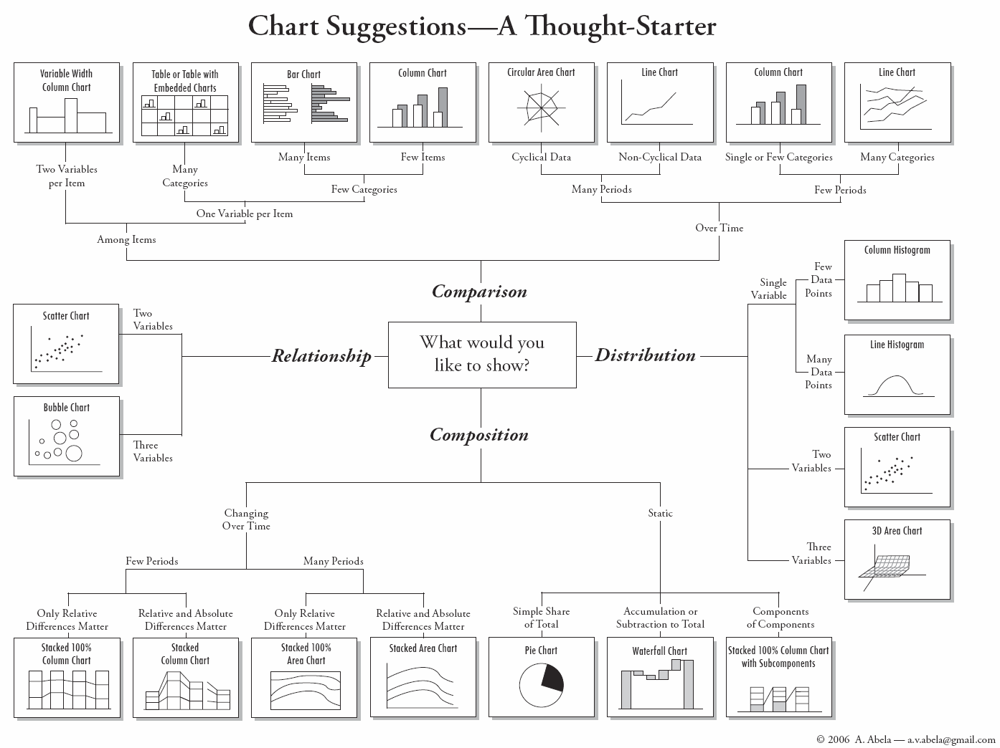
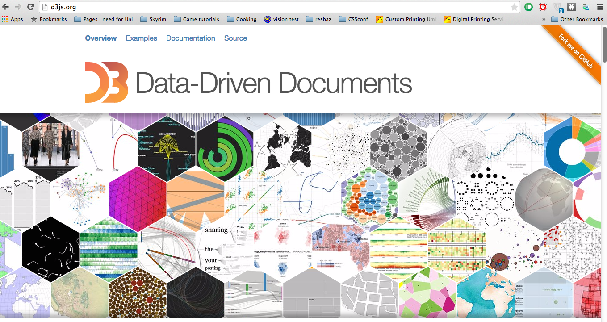

Beyond this content
...and now what??
Learning Objectives
- How do I make the plot I want?
- What are alternatives to using D3 to create pretty plots?
Choosing the right plot for your data is the first step to making it as accessible as possible. Even though bubble plots are objectively beautiful, they might not be the best choice for your specific data.
Other people have thought about this, too, and came up with this chart, that might come in handy:  Source
You can get more inspiration on d3js.org. Here, you will find pleny of beautiful examples of plots that people have already made.

Most of the examples happily link you to their code so you can go through it and modify it to suit your data. Some examples don't volunteer their code like this. But through the beauty of the internet, all that code is online, too, and we can have a look at it using the browser's developer tools (right click, 'inspect element').
This workshop tries to give you the tools you need to download someone's code and modify it for your needs. There are of course other ways you can create plots. Some handy packages that are online are:
Not all of them are free and not all of them are completely customisable, but they often offer a quicker and easier ways to create plots that you can then put online.